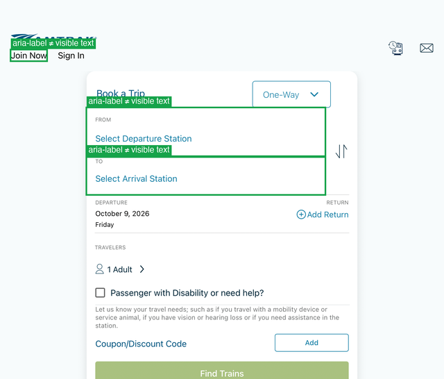
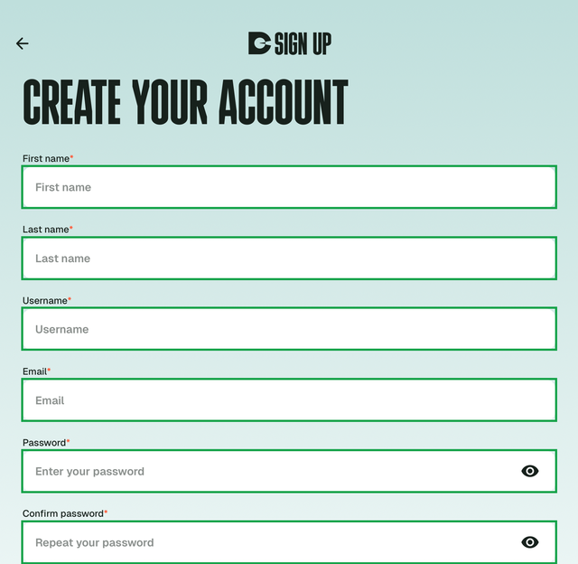
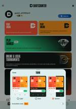
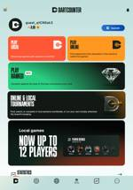
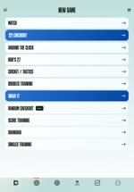
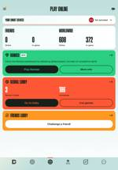
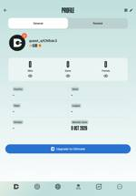
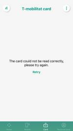
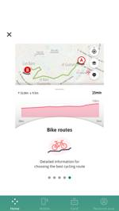

← POC on real Angular apps (automated scans) · WebView & Angular support analysis
You navigated each app on the iPad and scanned every screen you chose with manual-scan.sh; this covers screens the automated run could not reach
(DartCounter's game modes, online lobby, tournaments, stats, account and profile; Italo's login dialog, search, loyalty, partners and offers; T-mobilitat's native sections;
Amtrak's booking, trips, menu and train status). Results are shown for the current injector (PR #360 1bc0a07). The earlier
automated analysis is unchanged.
1bc0a07, replayed on these scans and spot-checked on device). Two patterns are left: background painted in shadow DOM (WebView, open) and the required-field asterisk (existing rule, same on native).aria-hidden and label / keyboard results on those screens are not representative. The extraction itself is correct for that state.Each failing or AI-routed rule result on a web element, classified. Counts are rule results, not distinct elements (one element can fail several rules).
| Finding | Origin | DartCounter | Italo | T-mobilitat | Amtrak | Total | |
|---|---|---|---|---|---|---|---|
| TP | aria-label does not start with / contain the visible text | Real app issue The app's aria-labels differ from the visible text. | · | · | · | 15 | 15 |
| TP | Icon-only button with no accessible name | Real app issue Icon buttons ship without a name. | 4 | 16 | · | · | 20 |
| TP | Low text / non-text contrast on a correctly measured background | Real app issue Colours chosen by the app. | 44 | 10 | · | 11 | 65 |
| TP | Field named only by its placeholder | Real app issue Fields have no visible label. | 2 | 3 | · | · | 5 |
| TP | Button name in lower case ("back") | Real app issue Name written in lower case. | · | 4 | · | · | 4 |
| TP | Clickable without a role / not keyboard reachable | Real app issue Clickable elements without a role or keyboard access. | 12 | 12 | · | 27 | 51 |
| TP* | Touch target below 44 pt (tab items are measured by their text: a WebView measurement issue) | Real app issue Small icon buttons (40×40). Tab items measured by their text are a WebView measurement issue, partly fixed. | 46 | 23 | · | 25 | 94 |
| FP | Background painted in shadow DOM missed (white toolbar titles, action-sheet items judged against the page / backdrop) | WebView (POC) Background sampler misses colours painted in shadow DOM ( ion-toolbar, ion-action-sheet). Open: needs an extractor change. | · | 4 | · | 8 | 12 |
| FP | Required-field asterisk flagged as a special character | Existing rule (same on native) The rule fails any label made only of non-alphanumerics ( *, ,); a native "*" label fails the same way. | 9 | 2 | · | · | 11 |
| Test artifact | DartCounter scans 06–13: page was aria-hidden because the update dialog was hidden, not closed | Test setup Update dialog hidden by the test workaround, not closed. | 187 | · | · | · | 187 |
| AI | Sent to AI review (headings, labels, images, input types) | Existing rule (same on native) Every text is a heading candidate and every unnamed control a label candidate — the AI rules route native screens the same way. | 688 | 306 | · | 318 | 1312 |
| — | Other | Existing rule (same on native) Mixed, low volume. | 4 | 3 | · | 2 | 9 |
Amtrak puts VoiceOver hints in its aria-labels: the field shows "Select Arrival Station" but its name is "Arrival station, Double-tap to search stations". A speech-input user saying the visible text won't hit it. Label in Name and Label at Front catch all of these.

Italo's header back / notification / profile buttons and DartCounter's round icon buttons have no accessible name; VoiceOver reads just "button".
Examples: DartCounter's orange "Code of Conduct" link on the teal page (2.2:1), white input fields on the pale teal background (1.4:1 boundary), Amtrak's "One-Way" (4.1:1, below 4.5).

Italo's white page titles sit on a red ion-toolbar, and Amtrak's action-sheet items on a white sheet. Both colours are painted on a shadow-DOM layer (from a CSS variable) that the background sampler misses, so the text is judged against the page grey (1.1:1) or the black backdrop behind the sheet.
DartCounter shows "*" after required field labels. Special-Character Label fails any element whose label is made only of non-alphanumeric characters, and it has no web-specific branch: a native UILabel showing "*" fails the same way. So these 11 results follow the existing rule, not the WebView extraction. Whether a lone asterisk should count is a rule decision (it is announced as "star"), for native and web alike.
ion-toolbar, ion-action-sheet): needs the extractor to read shadow-DOM background layers and CSS-variable colours. WebView implementation; not changed in this round.Hidden = controls marked aria-hidden / total controls. Highlighted rows are the DartCounter test-artifact scans.
| Screen | Nodes | Web view | Web elements | DOM ms | Fail | AI / review | Hidden | |
|---|---|---|---|---|---|---|---|---|
| DartCounter 9.6.2 scan 01 | 105 | ✓ | 58 | 25 | 1 | 62 | 11/13 | |
| DartCounter 9.6.2 scan 02 | 57 | ✓ | 31 | 15 | 13 | 44 | 0/12 | |
| DartCounter 9.6.2 scan 03 | 83 | ✓ | 53 | 21 | 43 | 85 | 0/19 | |
| DartCounter 9.6.2 scan 04 | 72 | ✓ | 40 | 23 | 4 | 50 | 11/13 | |
 | DartCounter 9.6.2 scan 05 | 118 | ✓ | 59 | 41 | 1 | 48 | 22/24 |
 | DartCounter 9.6.2 scan 06 | 97 | ✓ | 48 | 27 | 40 | 46 | 22/23 ⚠ |
 | DartCounter 9.6.2 scan 07 | 63 | ✓ | 34 | 21 | 29 | 48 | 20/21 ⚠ |
 | DartCounter 9.6.2 scan 08 | 78 | ✓ | 49 | 27 | 32 | 68 | 20/21 ⚠ |
| DartCounter 9.6.2 scan 09 | 53 | ✓ | 25 | 20 | 25 | 18 | 12/13 ⚠ | |
| DartCounter 9.6.2 scan 10 | 151 | ✓ | 79 | 51 | 60 | 101 | 33/34 ⚠ | |
| DartCounter 9.6.2 scan 11 | 38 | ✓ | 9 | 11 | 6 | 11 | 4/5 ⚠ | |
| DartCounter 9.6.2 scan 12 | 83 | ✓ | 34 | 19 | 18 | 51 | 14/15 ⚠ | |
 | DartCounter 9.6.2 scan 13 | 94 | ✓ | 45 | 25 | 36 | 56 | 19/20 ⚠ |
| Italo 6.1.0 scan 01 | 127 | ✓ | 36 | 34 | 18 | 40 | 0/10 | |
| Italo 6.1.0 scan 02 | 89 | ✓ | 36 | 25 | 18 | 40 | 0/10 | |
| Italo 6.1.0 scan 03 | 124 | ✓ | 54 | 63 | 2 | 58 | 10/11 | |
| Italo 6.1.0 scan 04 | 50 | ✓ | 15 | 24 | 10 | 18 | 0/7 | |
| Italo 6.1.0 scan 05 | 41 | ✓ | 6 | 13 | 4 | 4 | 0/2 | |
| Italo 6.1.0 scan 06 | 76 | ✓ | 36 | 28 | 10 | 54 | 0/4 | |
| Italo 6.1.0 scan 07 | 68 | ✓ | 27 | 31 | 7 | 25 | 0/9 | |
| Italo 6.1.0 scan 08 | 118 | ✓ | 55 | 37 | 8 | 67 | 0/14 | |
| T-mobilitat 1.21.0 scan 01 | 29 | native | 0 | — | 0 | 0 | — | |
| T-mobilitat 1.21.0 scan 02 | 28 | native | 0 | — | 0 | 0 | — | |
| T-mobilitat 1.21.0 scan 03 | 78 | native | 0 | — | 0 | 0 | — | |
| T-mobilitat 1.21.0 scan 04 | 61 | native | 0 | — | 0 | 0 | — | |
 | T-mobilitat 1.21.0 scan 05 | 155 | native | 0 | — | 0 | 0 | — |
| T-mobilitat 1.21.0 scan 06 | 121 | native | 0 | — | 0 | 0 | — | |
| T-mobilitat 1.21.0 scan 07 | 74 | native | 0 | — | 0 | 0 | — | |
| T-mobilitat 1.21.0 scan 08 | 42 | native | 0 | — | 0 | 0 | — | |
| T-mobilitat 1.21.0 scan 09 | 76 | native | 0 | — | 0 | 0 | — | |
| T-mobilitat 1.21.0 scan 10 | 84 | ✓ | 3 | 16 | 0 | 0 | 0/1 | |
 | T-mobilitat 1.21.0 scan 11 | 83 | ✓ | 3 | 10 | 0 | 0 | 0/1 |
| Amtrak 6.0.9 scan 01 | 49 | ✓ | 15 | 18 | 1 | 20 | 3/4 | |
| Amtrak 6.0.9 scan 02 | 42 | ✓ | 11 | 13 | 3 | 18 | 0/3 | |
| Amtrak 6.0.9 scan 03 | 64 | ✓ | 30 | 21 | 24 | 41 | 0/7 | |
| Amtrak 6.0.9 scan 04 | 74 | ✓ | 29 | 25 | 10 | 32 | 0/6 | |
| Amtrak 6.0.9 scan 05 | 78 | ✓ | 50 | 52 | 25 | 64 | 0/15 | |
| Amtrak 6.0.9 scan 06 | 93 | ✓ | 61 | 52 | 8 | 70 | 15/16 | |
| Amtrak 6.0.9 scan 07 | 44 | ✓ | 7 | 11 | 1 | 9 | 0/1 | |
| Amtrak 6.0.9 scan 08 | 73 | ✓ | 23 | 16 | 8 | 29 | 0/8 | |
| Amtrak 6.0.9 scan 09 | 82 | ✓ | 24 | 18 | 8 | 35 | 0/5 |